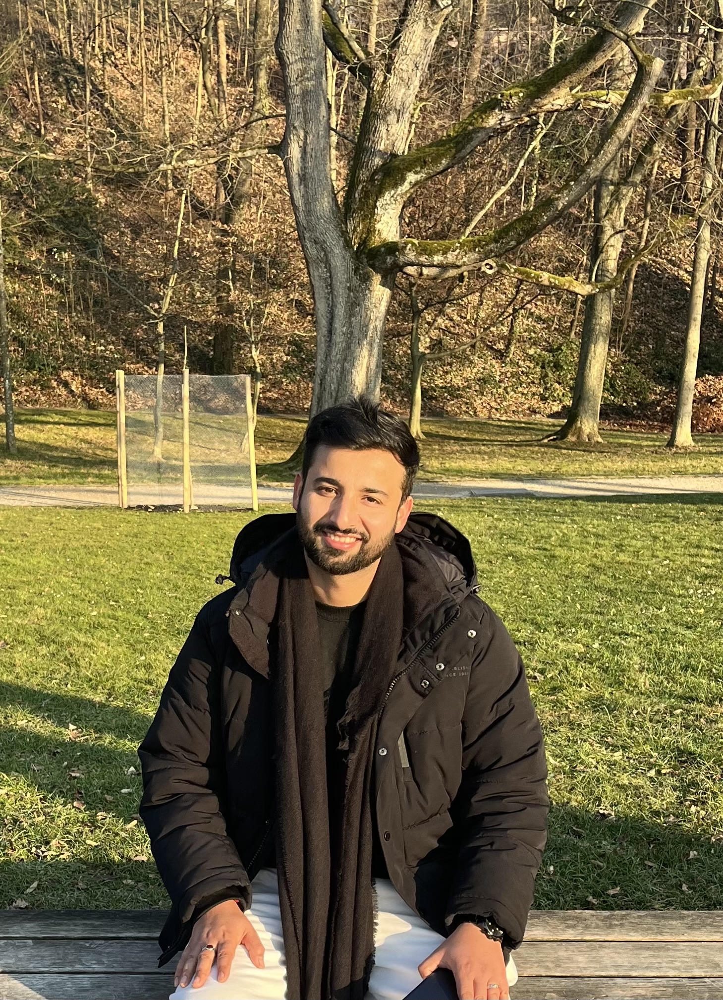

About
Welcome! I am a postdoctoral researcher at the Institute of Applied Analysis and Numerical Simulation, University of Stuttgart, working with Prof. Christian Rohde. I earned my PhD from the Department of Mathematics, Indian Institute of Technology Kharagpur, under the supervision of Dr. T. Raja Sekhar. My research focuses on the analysis of hyperbolic partial differential equations and related problems in applied mathematics, including gas dynamics, thin film flows, astrophysics, and shallow water equations. For a detailed list of my publications, please see the Research section or my ResearchGate and Google Scholar profiles. I am always happy to discuss my research—please feel free to reach out via email or the links below.

Postdoctoral Researcher.
Institute of Applied Analysis and Numerical Simulation, University of Stuttgart
In the group of Prof. Christian Rohde
- Phone: +49 711 685 65884
- City: Stuttgart, Germany
- Degree: Ph.D.
- Email: rahul.barthwal@mathematik.uni-stuttgart.de
Research Interests: Modelling, Analysis and Numerics for nonlinear PDEs
- Applied Analysis: Analysis of nonlinear hyperbolic partial differential equations
- Mathematical modelling and analysis of complex transport phenomena.
- Development of numerical schemes and their convergence analysis.
- Development of accurate higher-order solvers for complex dynamical problems.
Publications
This is my list of publications. Most of them are available on arXiv, if you need a published version of any of the papers, do not hesitate to contact me.
- Rahul Barthwal, Firas Dhaouadi and Christian Rohde, On hyperbolic approximations for a class of dispersive and diffusive-dispersive equations, Accepted for publication at the Journal of Nonlinear Science.
- Rahul Barthwal, Phillip Offner and Christian Rohde, Global existence for a class of Keyfitz--Kranzer systems with application to thin-film flows, Accepted for publication at Journal of Hyperbolic Differential Equations.
- Rahul Barthwal and Christian Rohde, A hyperbolic model for two-layer thin film flow with a perfectly soluble anti-surfactant, SIAM Journal on Applied Mathematics, 86(4), 2026, 2251-2279.
- Rahul Barthwal, Christian Rohde and Anupam Sen, Existence and stability of the Riemann solutions for a non-symmetric Keyfitz-Kranzer type model, Nonlinearity, IOP Press (London Mathematical Society), 39(3), 2026.
- Rahul Barthwal, Christian Rohde and Yue Wang, A generalized Riemann problem solver for a hyperbolic model governing two-layer thin film flow, Journal of Scientific Computing, Springer, 106(1), 2026.
- Anamika, Rahul Barthwal and T. Raja Sekhar, Construction of solutions to a Riemann problem for a two-dimensional Keyfitz-Kranzer type model governing thin film flow, Applied Mathematics and Computation, Elsevier, 498, 129378, (2025)
- Rahul Barthwal and T. Raja Sekhar, On a degenerate boundary value problem for relativistic magnetohydrodynamics with a general pressure law, Zeitschrift für Angewandte Mathematik und Physik, (Springer), 75, 207 (2024).
- Rahul Barthwal and T. Raja Sekhar, Existence of solutions to gas expansion problem through a sharp corner for 2-D Euler equations with general equation of state, Studies in Applied Mathematics, MIT Journal (Wiley), 151 (1), 141-170, (2023).
- Rahul Barthwal, T. Raja Sekhar and G. P. Raja Sekhar, Construction of solutions of a two-dimensional Riemann problem for a thin film model of a perfectly soluble anti-surfactant solution, Mathematical Methods in the Applied Sciences, (Wiley), 46 (6), 7413-7434, (2023).
- Rahul Barthwal and T. Raja Sekhar, Existence and regularity of solutions of a supersonic-sonic patch arising in axisymmetric relativistic transonic flow with general equation of state, Journal of Mathematical Analysis and Applications (Elsevier) 523 (2), 127022, (2023).
- Rahul Barthwal and T. Raja Sekhar, Two-dimensional non self-similar Riemann solutions for a thin film model of a perfectly soluble anti-surfactant solution, Quarterly of Applied Mathematics (American Mathematical Society), 80(4), 717-738, (2022).
- Rahul Barthwal and T. Raja Sekhar, On the existence and regularity of solutions of semi-hyperbolic patches to 2-D Euler equations with van der Waals gas, Studies in Applied Mathematics, MIT Journal (Wiley), 148(2), 543-576, (2022).
- Rahul Barthwal and T. Raja Sekhar, Simple waves for two-dimensional magnetohydrodynamics with extended Chaplygin gas, Indian Journal of Pure and Applied Mathematics (Springer), 53, 542-549, (2022).
Communicated and ongoing research works
These are some of the works under review and some works that I am currently working on.
- Rahul Barthwal, Jan Friedrich, and Christian Rohde, Convergence of an operator splitting Lax-Friedrichs scheme for a class of nonlocal balance laws, Submitted for publication.
- Rahul Barthwal, Firas Dhaouadi and Christian Rohde, Energy consistent hyperbolic approximation for a class of fourth-order partial differential equations, Submitted for publication.
- Rahul Barthwal and Christian Rohde, Convergence of an operator-splitting Lax-Friedrichs scheme for the Burgers-Hilbert equation, In preparation.
Reviewer services
I have been reviewing for the following journals:
- zbMATH Open
- Studies in Applied Mathematics
- Zeitschrift für Angewandte Mathematik und Physik
- Mathematics and Computers in Simulation
- Computer and Mathematics with Applications
Curriculum Vitae
This is my express curriculum vitae. Here is a link to my full curriculum vitae .
Summary
Rahul Barthwal
Postdoctoral researcher in the field of Hyperbolic conservation laws: Theory, modelling and Numerics with 2+ year of experience.
Supervisor: Prof. Christian Rohde
- Universität Stuttgart, Stuttgart, Germany
- +49 711 685 65884
- rahul.barthwal@mathematik.uni-stuttgart.de
Education
Ph.D. in Applied Mathematics
2018 - 2023
Indian Institute of Technology, Kharagpur, India
Thesis Title: "Nonlinear Aspects of Certain Multi-dimensional Hyperbolic System of Conservation Laws"
Supervisor: Dr. T. Raja Sekhar
Master of Science in Mathematics and Scientific Computing
2015 - 2017
Motilal Nehru National Institute of Technology, Allahabad, India
Thesis Title: "Magnetogasdynamics Shock Wave in a Rotating Non-Ideal Gas with Conduction Radiation Heat Flux."
Bachelor of Science
2012- 2015
Hemwati Nandan Bahuguna Garhwal University, Srinagar, India
Professional Experience
Postdoctoral Researcher of Applied Mathematics
July 2023 - Present
Supervisor: Prof. Christian Rohde
University of Stuttgart, Stuttgart, Germany
- Working on analysis and numerics of several systems of nonlinear PDEs.
- Lecturer and instructor for the Master's course "Numerical methods for differential equations" (Summer 2025). Received feedback of 1.4 out of 5, and the number of students doubled.
- Lecturer and instructor for the Master's course "Numerical methods for differential equations" (Summer 2024). Received feedback of 1.6 out of 5, 1 being the best and 5 being the worst. Handwritten lecture notes
- Developed mathematical models for fluid dynamical phenomena and analyzed them.
- Teaching assistant for Höhere Mathematik 1: Winter semester 2024
- Teaching assistant for Höhere Mathematik 3: Winter semester 2023
Assistant Professor
July 2017 - April 2018
Smt. S. R. Patel Engineering College, Unjha, Gujarat
Awards
IMS Award for best paper presentation
88th Annual Conference of Indian Mathematical Society held at BIT-Mesra for presenting "Study of a supersonic-sonic patch arising in axisymmetric relativistic transonic flow".
Travel grant (1000 Euro)
Institute of Applied Analysis to attend the summer school "Horizons in Nonlinear PDEs", Ulm University, Germany.
DST international travel grant award
To attend the summer school "Horizons in Nonlinear PDEs", Ulm University, Germany (Not availed).
Young Scientist Award
66th Congress of Indian Society Of Theoretical and Applied Mechanics(ISTAM) held at VIT-AP University for presenting "A two-dimensional Riemann problem for a new hyperbolic thin film model of a perfectly soluble anti-surfactant solution".
Silver Medalist in M.Sc. Mathematics and Scientific Computing.
Deendayal Upadhyay excellency in education award for securing 9th Rank in state board's senior secondary exam.
Scholarships
UGC-CSIR Senior research fellowship
September, 2021 - June, 2023
Indian Institute of Technology Kharagpur
UGC-CSIR Junior research fellowship
August, 2019 - August, 2021
Indian Institute of Technology Kharagpur
Teaching assistantship
July, 2018 - August, 2019
Indian Institute of Technology Kharagpur
INSPIRE Scholarship
July, 2012 - July, 2017
Ministry of Human Resources and Development, India
Workshops, Conferences and Invited talks
List of workshops, seminars, and conferences I attended. Also, the list of invited talks where I delivered a lecture/talk.
- All
- Conferences
- Workshops
- Invited talks
- Organization
Beyond the Mathematics
A quick look at the books I enjoy, the media I follow, and the things I turn to when I step away from mathematics and the office.
Mathematical Books and Online Resources
Hyperbolic Partial Differential Equations
- Partial Differential Equations, L. C. Evans A comprehensive introduction to PDEs, including the foundations of hyperbolic equations and conservation laws.
- Hyperbolic Conservation Laws in Continuum Physics, C. M. Dafermos A classic reference and, in many ways, a bible for the theory of hyperbolic conservation laws.
- Numerical Approximation of Hyperbolic Systems of Conservation Laws, E. Godlewski and P.-A. Raviart A detailed treatment connecting the analytical theory of conservation laws with numerical approximation.
- Hyperbolic Systems of Conservation Laws: The One-Dimensional Cauchy Problem, Alberto Bressan An excellent read for understanding the theory of hyperbolic systems in detail.
- The Two-Dimensional Riemann Problem in Gas Dynamics, J. Li A useful reference for understanding two-dimensional Riemann problems in compressible flow.
Numerical Analysis
- Numerical Analysis, Richard L. Burden and J. Douglas Faires A broad introduction to the fundamental ideas and techniques of numerical analysis.
- Riemann Solvers and Numerical Methods for Fluid Dynamics, E. F. Toro A practical reference for numerical schemes and their implementation in computational fluid dynamics.
- Numerical Methods for Conservation Laws, Randall J. LeVeque One of my favourite references for finite-volume methods and numerical conservation laws.
Functional Analysis
- Sobolev Spaces, R. A. Adams and J. J. F. Fournier A standard reference for Sobolev spaces and the functional analytic tools used in PDEs.
- Topics in Functional Analysis and Applications, S. Kesavan Particularly useful for the functional analysis encountered in finite element methods.
Learning Mathematics Online
When I want to learn something outside my immediate research area, revisit a familiar concept, or simply watch mathematics being explained well, these are some of the channels I enjoy.
Books I Enjoy
- Kitne Pakistan Kamleshwar
- Shiva Trilogy Amish
- The Da Vinci Code & Angels & Demons Dan Brown
- Raag Darbari Shri Lal Shukla
- Godaan & Gaban Premchand
TV Series I Recommend
A rather eclectic mix of science fiction, comedy, historical drama, political drama, and crime.
- Dark
- The Big Bang Theory
- Band of Brothers
- Friends
- Game of Thrones
- House of Cards
- Breaking Bad
- Mindhunter
Some of My Other Interests
Apart from mathematics, I am a big badminton fan and enjoy both playing badminton doubles and watching professional games. I also like to abstract out my emotions in the form of poetry from time to time. Some of my favourite forms are geet, ghazal, and nazm, and some of the poets I enjoy reading include Ghalib, Meer, Ahmad Faraz, Bashir Badr, Jaun Elia, and Dushyant Kumar.
When I want to completely unplug, I am usually planning my next hiking trip and looking for a new place to explore. For me, spending time outdoors is probably the best way to get away from equations, screens, and the office.
Testimonials
These are some of the comments from the attendees of the course "Numerical methods for differential equations" and my supervisors
Contact
If you have any questions, please feel free to write to me. If I cannot respond due to my busy schedule, please send me a reminder.